Xiaomi
Одна из ключевых фигур в жизни Xiomi и ее генеральный директор Лэй Цзюнь, восемь лет (1992 – 2000) проработал в Kingston Technology Company, где прошел путь от рядового инженера до президента компании. Именно благодаря работе в Kingston будущий основатель «Зернышка риса» (именно так буквально переводится название компании Xiaomi) получил опыт по портированию и работе с приложениями. В течение всей жизни Лэй интересовался различными технологическими стартапами и всячески стремился инвестировать в действительно интересные проекты. Поддержка таких стартапов, как: интернет-магазин Vancl.com, популярный мобильный браузер UCWEB, видеосервис yy.com и интернет-магазин по продаже книг JOYO принесли «бизнес-ангелу» Лэй Цзюну действительно внушительную прибыль. В список миллиардеров Лэй попал еще до основания компании Xiaomi.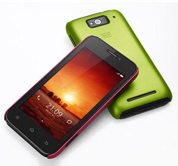
В апреле 2010 года прошло около 1,5 лет со дня выхода первой версии мобильной операционной системы Android. Назвать ее совершенной вряд ли повернулся бы язык и было понятно, что пользователь хотел большего. И пока разработчики Google неспешно исправляли баги и ошибки программного кода, 6 апреля 2010 года на территории Китая восемь основателей-фанатов мобильных технологий, интернета и ОС Android, во главе с Лэй Цзюном регистрируют компанию Xiaomi Tech. XiaomiFounders С программным кодом и разработкой ПО каждый из «восьмерки, перевернувшей мир», был знаком не понаслышке: Гонк Фенг – глава компании Google China; Хуго Барра – вице-президент по разработке ОС Android; Бин Лин – проработал в компании Microsoft и Google (главный инженер); Энди Рубин – выходец из Силиконовой долины; Джиангжи Гуанг – работал в Microsoft China; Гуангпинг Джоу – глава подразделения Motorolla на территории Китая. В течение нескольких месяцев Лэй Цзюнь и Бин Лин сутками обсуждали мобильные тенденции.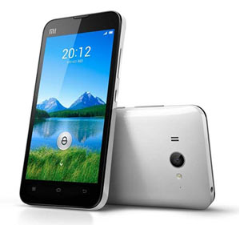
Бин Лин: «Практически каждые выходные с раннего утра и до поздней ночи мы с Лэйем обсуждали свои идеи и видение того, какой должна быть операционная система совершенного смартфона. Это была настоящая страсть к хорошему ПО и дерзким практичным идеям. Несмотря на это, я по-прежнему боялся оставить работу в Google. 12 января 2010 года Google объявила о готовности к уходу с китайского рынка – это был настоящий призыв к действию» Громкое заявление поискового гиганта Google было воспринято как вызов и в качестве альтернативы неповоротливому интерфейсу Android, только что зарегистрированная компания Xiaomi Tech решается дать свой ответ. MIUI: начало В 2010 году на рынок выходит первая версия мобильной операционной системы MIUI. На первый взгляд сложная к прочтению аббреввеатура является сокращением английских местоимений: Me, You, I – «Я, ты, я». И выбор такого названия не случаен – уже первая версия ОС MIUI оказалась невероятно дружелюбной и понятной конечному пользователю. Но главная ее особенность – стабильная и безотказная работа.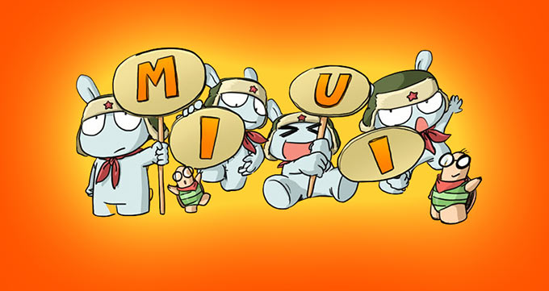
MIUI В качестве стратегии распространения новой ОС, основатель компании Xiaomi выбрал доступность для любых смартфонов, без привязки к смартфонам собственного производства. «Сарафанное радио», форумы и восторженные отзывы пользователей в социальных сетях привели к тому, что уже спустя три года аудитория операционной системы MIUI перевалила за отметку в 30 млн. Эра устройств Xiaomi Неординарность компании Xiaomi заключается в том, что первым ее продуктом стало не конкретное устройство, а именно операционная система. В руки пользователей первое материальное детище компании в виде смартфона Xiaomi Mi One попадет лишь летом 2011 года. 18 августа состоялся анонс недорогого, но производительного телефона, работающего под управлением ОС Android и фирменной оболочки MIUI. Более производительный процессор Qualcomm Snapdragon S4 (4-Core 1.5 ГГц), графическое ядро Adreno 320 и 2 ГБ оперативной памяти сумели уложить на лопатки все смартфоны под правлением ОС Android, анонсированные в первой половине 2012 года. Ошеломительный успех не заставил себя долго ждать. Xiaomi Mi Two получает статус «великого китайского смартфона» (Forbes), а за два года компания реализовывает свыше 25 миллионов устройств. Продолжая традицию создания доступных смартфонов с впечатляющими характеристиками, административная верхушка Xiaomi Tech решается на покорение специфического рынка Индии. В стране «золотоносных муравьев» представлено множество брендов, о которых мы вряд ли когда-либо услышим. Большинство смартфонов действительно доступны рядовому покупателю, но такая доступность, как правило, идет в ущерб производительности. Решающую роль в насыщении индийского рынка «вменяемыми» смартфонами на себя и взяла Xiaomi, представив следующую модель смартфона – Xiaomi Mi 3. С выходом этой модели смартфона миф, связанный с тем, что «все китайское – низкокачественное» был развеян. Всего за 40 минут с прилавков индийского интернет-магазина Flipkart линейка Xiaomi Mi 3 была распродана. Но рекордные продажи новинки – лишь одна сторона медали. Смартфон Xiaomi Mi-3 стал ключевой моделью и визитной карточкой молодого китайского производителя, сделав его серьезным игроком мирового рынка и доставившим немало головной боли маркетинговой стратегии таких гигантов, как Apple и Samsung. Достойный 5-дюймовый Full HD – экран, хорошая 13-мегапиксельная камера, производительный четырехъядерный процессор с частотой в 2,3 ГГц и привлекательный дизайн за гуманные $300 – все эти характеристики действительно заставили покупателя пересмотреть свое отношение к «устоявшимся брендам» и взглянуть на продукт молодой китайской компании без очков презрения. Вкусив плод успеха, Xiaomi Tech во главе с Лэй Цзюнем в течение года работает над следующим поколением смартфона. Тем временем растущее в геометрическое прогрессии количество владельцев Mi ждет от компании нового класса устройств – планшетов. Подогрев рынок, в августе 2014 года вместе с логичным звеном эволюции смартфонов Xiaomi Mi 4 Лэй Цзюн представляет первый планшет компании. xiaomiMiPad Вы хотели Retina-экран под управлением ОС Android? Вам нужен мощный производительный планшет, который справится как с офисными документами так и с играми, но при этом помещался в кармане халата врача? В конце-концов, вы ищите альтернативу iPad mini? Ответом на все эти запросы стал планшет Xiaomi MiPad. Новинка открывает новую страницу в истории китайского бренда, а спустя несколько месяцев на рынок врывается обновленный смартфон Xiaomi Mi 4, поставивший новый рекорд в жизни компании. XiaomiMI4 Xiaomi Mi 4 Дата выхода: 22 июля 2014 Цена: $320 (16 ГБ модель) ОС: Android 4.4 MIUI 5.0 Экран: 5” IPS 1920×1080 (441 ppi) Процессор: 4-Core QS 2,5 ГГц ОЗУ: 3 ГБ Флеш-память: 16, 32, 64ГБ Аккумулятор: 3080 мАч. Камера: 13 МП Пока критики и снобы во всю упрекали молодого китайского производителя в плагиате и посягательстве на дизайн компании Apple, за 37 секунд после официального старта продаж Xiaomi Mi 4 смартфоны попросту закончились. Возросшая производительность, дизайнерская диета (новинка стала тоньше предшественника) и впечатляющий экран предлагались практически по неизменному ценнику в $320.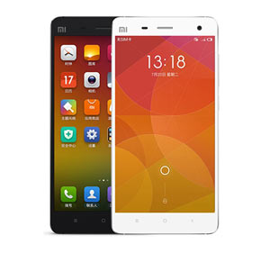
Секрет успеха и в чем Xiaomi похожа на Apple Понять каким образом молодая и малоизвестная компания, начавшая свой стремительный путь развития в океане, кишащем маститыми бизнес-акулами, сумела всего за 4 года обойти по продажам смартфонов южнокорейского гиганта Samsung (15 млн проданных устройств за Q2 2014 у Xiaomi против 13,4 млн у Samsung на территории Китая) нелегко. Но как и все гениальное, успех секрета «Зернышка риса» весьма прост. Стратегия компании Xiaomi отличается от ряда «коллег» на рынке мобильных технологий. В течение первых двух лет после выхода первого смартфона Xiaomi Mi One китайский бренд реализовывал смартфоны по цене, отличающейся от себестоимости устройств всего в 20-30 долларов. В качестве основного источника прибыли администрация выбрала не сам аппаратный продукт, а сопутствующую ему цифровую составляющую. Цена почти равна себестоимости. Собственный магазин приложений и игр, а также дополнительные опциональные функции для смартфонов приносят значительно больше прибыли, чем непосредственные продажи самих терминалов. В первом квартале текущего года на территории США был открыт и еще один источник прибыли – онлайн магазин аксессуаров Xiaomi. Доступность. Компания Xiaomi всегда открыта для коммуникации с рядовым пользователем, а для тех, кто стал преданным поклонником бренда предусмотрена возможность приобретения новинок в первых рядах. Пользователь = пиар-менеджер. Теоретически сегодня Xiaomi нет необходимости в принудительном самопиаре готовящегося к выходу нового продукта. Эту работу за нее выполняют преданные пользователи социальных сетей и сервисов микроблогов. Подтверждением тому служит 50 тысяч реализованных смартфонов Xiaomi Mi 2 в сети Sina Weibo всего за пять минут.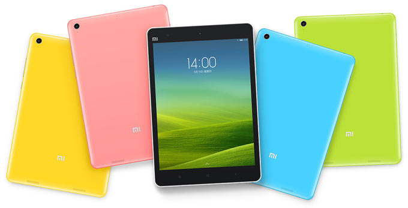
Регулярная поддержка. Если взять во внимание тот факт, что в начале развития Xiaomi стояла именно операционная система, то и спустя четыре года существования Лэй Цзюн остался верен этому ориентиру. Каждый пользователей получает обновление самой актуальной прошивки вне зависимости от того, является ли он разработчиком или владельцем архаичной модели устройства. Трудолюбие. Общепринятая 40-часовая рабочая неделя для основателя компании Лэй Цзюна скорее нонсенс. 45-летний миллиардер по-прежнему работает не менее, чем 100 часов в неделю. Результат такого труда мы можем наблюдать на стремительном росте акций компании Xiaomi. Нередко китайский бренд Xiaomi сравнивается с американской компанией Apple, а ее Лэй Цзюна называют китайским Стивом Джобсом. Отрицать подобную схожесть вряд ли стоит, но воспринимать такую схожесть можно не только с точки зрения прямого заимствования, сколько со стороны китайского ответа американским доводам. Практически все презентации Лэй Цзюн проводит презентации в черном гольфе и джинсах. Комментарий основателя Xiaomi звучит весьма убедительно: «В смартфонах нашей компании установлены компоненты тех же производителей, что и в смартфонах Apple». LeiSteve Немало споров возникло вокруг единственного планшета компании Xiaomi MiPad. Технологические критики назвали его симбиозом iPad mini и разноцветного iPhone 5C. Более того, на рынке планшетов под управлением ОС Android MiPad стал первой моделью с экраном, использующим соотношение сторон 4:3 (как и у iPad), а не общепринятые 16:9. XiaomiMiIphone5C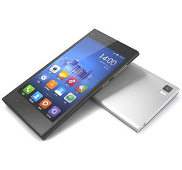
Появление в 2010 году альтернативной ОС MIUI было сперва воспринято как выход на рынок очередного клона мобильной операционной системы iOS для владельцев Android-устройств. MIUI тут же окрестили эликсиром для превращения Android-смартфона в iPhone. iOSMiui Ответ популярной телевизионной приставке Apple TV со стороны Xiaomi выглядит в лице продукта Mi Box. MiBox Внешняя схожесть устройств неоспорима, вот только ее возможности и аппаратная начинка с легкостью утрут нос несколько устаревшей приставке от Apple. Не стоит забывать и о цене в $32. Владельцы альтернативы компьютерной мыши в виде Apple Magic Trackpad при виде миниатюрного роутера Xiaomi Mi Router Mini наверняка найдут много общего. MiniRout Таким образом, китайский производитель сумел преломить дизайн одной категории устройств компании-конкурента при выпуске абсолютной другой категории собственной продукции. Устоявшаяся приставка «ай» применяется к не только реально существующим продуктам компании Apple, но и к концептам: iPhone, iPad, iCloud, iTunes и будоражащий сознание iCar. У Xiaomi на этот счет свой вариант: Mi One (Two, Three), MiPad, Mi Cloud, Mi Router, Mi Box. MiCloud В качестве достойного ответа Apple MacBook Air компания Xiaomi готовит собственный ноутбук, существующий пока на уровне слухов. XiaomiMiBook 15-дюймовая версия ноутбука с процессором Intel i7 (Haswell) и 16 ГБ оперативной памяти ориентировочно будет стоит $500. Как и Apple компания Xiaomi проводит презентацию нового поколения смартфонов один раз в год – в конце июля – середине августа. Apple радует новыми смартфонами в начале-середине сентября. Несмотря на столь внушительный список плагиата, Apple не подала ни одного судебного иска против Xiaomi. Чего ждать от Xiaomi Еще полгода назад генеральный директор Xiaomi заявил, что в ближайшие 5-10 лет его компания имеет все шансы получить звание главного поставщика смартфонов по всему миру. Состоянием на третий квартал 2014 года молодой бренд Xiaomi завоевал 5,6% продаж смартфонов по всему миру. Всего за год продажи линейки Xiomi Mi увеличились на 360%. Не стоит забывать и о том, что в планах Xiaomi порабощение не только рынка смартфонов. Компания уверенно работает и в направлении планшетов, телевизионных приставок, компьютерной периферии и носимых аксессуаров. Уже в ближайшее время китайский бренд готовится показать свое видение того, какими должны быть настоящие смарт-часы. ApplevsXiaomi Если рассматривать Xiaomi в качестве альтернативы Apple исключительно по показателям продаж и взглядам на обозримое будущее, нельзя упускать тот факт, что «китайский ориентир» Apple – разумная стратегия. В свою очередь, Xiaomi для Поднебесной – отечественный бренд, а приоритетной страной по распространению своей продукции Лэй Цзюн выбрал Индию, численность населения которой превышает 1,2 млрд человек. Вот только ценовая политика Xiaomi значительно отличается от американской компании.Apple
iPhone (МФА: [ˈaɪfoʊn]; «Айфо́н»[прим. 2]) — серия смартфонов, разработанных корпорацией Apple. Работают под управлением операционной системы iOS, представляющей собой упрощённую и оптимизированную для функционирования на мобильном устройстве версию macOS. Впервые iPhone был анонсирован Стивом Джобсом на конференции Macworld Expo 9 января 2007 года. Название iPhone образовано от англ. phone (телефон) добавлением буквы i; на презентации Джобс заявил, что это сокращение слова Internet (Интернет), а также сказал, что «эта буква означает для нас и другие вещи» и показал слайд со словами individual, instruct, inform, inspire («личный; обучать; сообщать; вдохновлять»)[8]. В продажу аппарат поступил 29 июня 2007 года вместе с iPhone OS и быстро завоевал существенную часть рынка смартфонов в США. Популярность iPhone OS поддержал вышедший в продажу в сентябре того же года iPod touch, обладавший, однако, заметно урезанной функциональностью по сравнению с iPhone. 10 июня 2008 года на конференции WWDC 2008 была представлена новая модель — iPhone 3G, более совершенная и лишённая многих аппаратных и программных недостатков предшественника, с новой версией iPhone OS 2.0, по более низкой цене с контрактом оператора в США. Также iPhone 3G стал первым iPhone, получившим русскую локализацию[9], и первым, официально продававшимся в России[10][11]. В 2008 году iPhone занял второе место в рейтинге наиболее полезных современных технологий по версии издания PC World[12]. 8 июня 2009 года была представлена следующая, третья по счёту, модель телефона — iPhone 3GS, которая является усовершенствованной версией iPhone 3G. iPhone 3GS имеет вдвое больший объём оперативной памяти, увеличенную скорость работы, доступен в конфигурации с 32 ГБ встроенной памяти и оснащён ОС iPhone OS 3.0, устранившей значительную часть программных недостатков предыдущих моделей смартфонов и предоставившей дополнительные функции: копирование и вставка, возможность отправки MMS, Spotlight, Speak Notes, возможность скачивать телешоу, музыкальные видео, фильмы и аудиокниги прямо на iPhone, сервис Find My iPhone, пересылку/удаление SMS и др. 7 июня 2010 года был представлен iPhone 4 с обновлённой операционной системой (iPhone OS в этот день получила новое название — iOS), имеющий ряд значительных преимуществ над предшественниками, включая более мощный центральный процессор Apple A4, ЖК-дисплей с IPS-матрицей с разрешением 640×960 пикселей, 5-мегапиксельную камеру, а также камеру для видеосвязи FaceTime (0,3 Мп). 4 октября 2011 года был представлен iPhone 4s с операционной системой iOS 5. Обновлённый телефон имел позаимствованный от iPad 2 процессор Apple A5, 8-мегапиксельную камеру и гибридную систему связи GSM/CDMA. Также до WWDC 2012 голосовой помощник Siri, пришедший вместо Voice Control, был доступен только в iPhone 4s. Всего по состоянию на июль 2012 года было продано более 250 млн iPhone[13]. 19 сентября 2012 года компания представила очередное обновление — iPhone 5. Эта модель обрела более «высокий» экран (диагональ экрана 4 дюйма против 3,5 у всех предыдущих), что является самым существенным изменением внешнего вида iPhone с начала его производства, плюс обновлённый разъём Lightning. Также была представлена iOS 6.


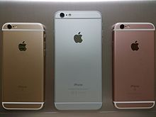
Основные нововведения: Отсутствие аудиоразъёма 3,5 мм (мини-джек). Для подключения наушников предлагается разъём Lightning, переходник с Lightning на TRS 3,5 мм, или беспроводные наушники (в частности, Apple AirPods). Использование стереодинамиков по бокам (внизу и вверху). Отказ от 16- и 64-гигабайтных версий. Влаго- и пылезащита по стандарту IP67[60]. iPhone 8, iPhone 8 Plus и iPhone X Основная статья: iPhone 8 Основная статья: iPhone X Представлены 12 сентября 2017 года и получили процессор Apple A11 Bionic и сопроцессор М11.[61]. Главными нововведениями «десятки» являются отсутствие кнопки Home в нижней части экрана (он теперь безрамочный), вертикальная двойная камера, OLED-дисплей с увеличенной до 5,8 дюйма диагональю и новая технология блокировки, которая получила название Face ID[62]. iPhone 8/8 Plus отличаются от своих предшественников (iPhone 7 и iPhone 7 Plus) изменением в материалах корпуса (задняя панель теперь из стекла) и новым процессором А11[63]. iPhone Xs, iPhone Xs Max и iPhone XR Основная статья: iPhone XS Основная статья: iPhone XR Представлены 12 сентября 2018 года. Получили обновлённый процессор Apple А12 Bionic и сопроцессор М12. iPhone XS и XS Max получили OLED-дисплей с технологией HDR. В iPhone XR используется ЖК-дисплей Liquid Retina с диагональю 6,1 дюйма. iPhone XS внешне схож с iPhone X, а iPhone XS Max его увеличенная копия. Главными нововведениями являются: Обновлённый процессор. Увеличенная диагональ (только для iPhone XS Max). Вариант с увеличенной памятью (до 512 гигабайт). Новые цветовые оформления (золотой для iPhone XS и iPhone XS Max; белый, синий, коралловый, чёрный, жёлтый — для iPhone XR). Возможность подключения двух сим-карт iPhone 11, iPhone 11 Pro и iPhone 11 Pro Max Основная статья: iPhone 11 Основная статья: iPhone 11 Pro Представлены 10 сентября 2019 года.Samsung
Основание компании В 1930-х годах в Корее предприниматель Ли Бён Чхоль открывает своё дело по производству рисовой муки. Небольшой склад в городе Тэгу становится началом большой истории компании Samsung. В это время Корея являлась колонией Японии, и в стране было довольно сложно заниматься частным предпринимательством. Тем не менее, уже в 1938 году Ли удаётся создать первый независимый канал для экспорта из Кореи в Китай и Маньчжурию. Активное развитие поставок пищевых продуктов, таких, как рис, сахар и сушёная рыба, дало возможность официально зарегистрировать торговую марку Samsung Trading Company. Иностранное (для Кореи) происхождение названия явилось следствием далеко идущих, амбициозных планов корейского предпринимателя: уже к концу 1950-х годов Ли Бён собирался наладить торговлю со странами Американского континента. А после высадки войск США на Корейском полуострове продукция завода по производству рисовой водки и пива стала продаваться представителям союзных войск. Война в Корее положила конец этому бизнесу. Склады были разграблены и сожжены так же, как и основные заводы компании.
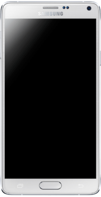
Объединение Sanyo и Samsung положило начало одному из крупнейших секторов Samsung Group — Samsung Electronics. Компании удалось, хоть и с большими убытками, пережить экономический кризис 1980-х годов. Цена кризиса — несколько непрофилирующих подразделений, резкое сокращение количества дочерних компаний. С приходом в правление Ли Гон Хи, младшего сына Ли Бён Чхоля, был предложен целый спектр реформ, который предполагал не только полную реструктуризацию компании, но и изменение самих основ управления: компания должна была полностью удовлетворять условиям закона о свободной торговле. Предложения по изменению политики в отношении внешних инвесторов должны были повысить привлекательность компании для субсидирования, так как конгломерат лишился финансовой поддержки со стороны государства. До 1980-х годов акции компаний, входящих в концерн, имели обращение только на территории Южной Кореи, при этом пользовались достаточно низким спросом со стороны инвесторов. Причина — традиционно азиатское управление по принципам конфуцианства: во главе правления находились исключительно представители семьи Ли. Рычаги влияния на принятие решений в области управления компаниями у внешних инвесторов отсутствовали полностью. Помимо этого, традиционный менеджмент подразумевал пожизненное трудоустройство и продвижение по карьерной лестнице за выслугу лет.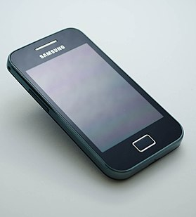
Были введены маркетинговые изменения, полная переработка миссии компании и изменение её символа. На двух первых логотипах компании присутствовали три красные звезды. Но руководство Samsung, посчитав прежний логотип несоответствующим имиджу международной корпорации, решилось на его замену. Именно тогда увидела свет современная эмблема — динамично наклоненный синий эллипс с написанным внутри названием фирмы. Отличный дизайн и масштабная рекламная кампания сделали своё дело: логотип стал одним из самых узнаваемых в мире[4]. Студенты-рекламисты ведущих вузов изучают сегодня смену логотипа Samsung как пример исключительно удачного ребрендинга[5]. При разработке новой эмблемы не обошлось без восточной философии. По версии представителей компании «эллиптическая форма логотипа символизирует движение в мировом пространстве, выражая идею обновления и совершенствования»[5]. Эти изменения продолжались вплоть до 1990-х годов. В 2015 году оставили только название фирмы, написанное синим цветом.Huawei
Huawei – ведущий мировой поставщик инфокоммуникационных решений, цель которого – обогащать жизнь людей через общение. Благодаря нашим инновационным разработкам, ориентированным на потребности клиентов и развитой партнерской сети, мы достигли высоких результатов в разработке телекоммуникационных сетей, терминальных решений и систем облачных вычислений. 180 тыс. сотрудников Huawei по всему миру стремятся создавать максимально выгодные условия для операторов, предприятий и конечных пользователей, предоставляя им конкурентоспособные решения и услуги. Одна треть населения планеты использует наши инновационные продукты, решения и сервисы более чем в 170 странах мира. Основанная в 1987 году, Huawei является частной компанией, полностью находящейся во владении своих сотрудников.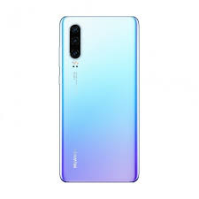
Миссия компании Huawei Мы создаем ценность для наших клиентов. В сотрудничестве с операторами связи компания Huawei построила уже более 1 500 сетей, благодаря чему треть населения Земли получает доступ к Интернету. Мы помогаем нашим корпоративным клиентам создавать гибкие сети, в том числе на основе открытых облачных платформ, тем самым повышая эффективность операций и способствуя динамичному внедрению инноваций в таких сферах, как безопасность городов, финансы, транспорт и энергетика. «Умные» устройства и смартфоны Huawei улучшают качество интеграции цифровых технологий, используемых в работе, повседневной жизни или развлекательных целях. Мы способствуем развитию отрасли. Компания Huawei поддерживает принципы открытости, сотрудничества и совместного достижения успеха. Благодаря объединению усилий по разработке инновационных продуктов и решений с нашими партнерами и коллегами мы увеличиваем ценность информационно-коммуникационных технологий, создавая устойчивую экосистему взаимовыгодного сотрудничества. Huawei принимает активное участие в деятельности более 300 организаций по стандартизации, отраслевых ассоциаций и сообществ разработчиков ПО с открытым исходным кодом. Компания уже внесла более 43 000 предложений по стандартизации, содействуя более эффективному сотрудничеству в отрасли. Совместно с партнерами мы работаем над инновациями в таких быстро развивающихся направлениях, как облачные вычисления, программно-конфигурируемые сети (SDN), виртуализация сетевых функций (NFV) и 5G. Вместе мы обеспечиваем непрерывное развитие отрасли, основанное на продуктивном сотрудничестве.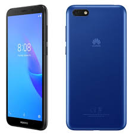
Мы стимулируем экономический рост. В странах, где ведет бизнес Huawei, увеличиваются налоговые поступления, появляются новые рабочие места и стимулируется формирование цепочки создания стоимости в ИКТ. Но что еще более важно, компания выводит на рынок инновационные ИКТ-решения, способствующие цифровой трансформации всех отраслей экономики и, соответственно, экономическому росту и значительному повышению качества жизни. Мы вносим свой вклад в устойчивое развитие. Придерживаясь принципов корпоративной гражданской ответственности, Huawei прилагает значительные усилия к преодолению цифрового неравенства. Мы остро осознаем важность той роли, которую телекоммуникации играют в чрезвычайных ситуациях, требующих оперативного реагирования: например, в районах Западной Африки, охваченных эпидемией лихорадки Эбола, во время радиоактивного загрязнения в Японии после цунами и после мощного землетрясения в Сычуане (Китай), когда наши специалисты приложили все усилия к восстановлению сетей связи в пострадавших регионах и обеспечению бесперебойной работы критически важного телекоммуникационного оборудования. В рамках содействия устойчивому развитию мы также помогаем добиться успеха новому поколению ИКТ-специалистов с помощью программы Seeds for the Future. Студенты высших учебных заведений получают возможность посетить Китай, пройти обучение и приобрести непосредственный опыт работы в отрасли. Мы предоставляем целеустремленным сотрудникам широкие возможности для роста. Одной из основополагающих ценностей Huawei является усиление вовлеченности персонала различными способами. Оценка эффективности работы сотрудников и отбор на руководящие позиции производятся в соответствии с достигнутыми результатами и степенью ответственности. Мы предлагаем глобальную платформу профессионального развития, позволяющую молодым специалистам взять на себя повышенную ответственность и ускорить карьерный рост. Более 170 000 сотрудников Huawei могут рассчитывать на достойное вознаграждение своих усилий и получение уникального опыта. Стратегическое видение компании Huawei За последние 28 лет сотрудники Huawei помогали компании достигать ее неизменной ключевой стратегической цели, отказываясь от легких решений и избегая других проявлений недальновидной конъюнктурности. Демонстрируя целостный и практичный подход во всех направлениях своей деятельности, компания планомерно инвестировала в развитие и в течение многих лет целенаправленно наращивала свой потенциал для технологического прорыва. Приверженность этой стратегии сводится к ключевым ценностям Huawei: ориентация на клиента, повышение вовлеченности, настойчивость в достижении целей и рост благодаря критическому взгляду на собственный бизнес. Цифровая эпоха открыла перед нами широчайшие возможности. Компания Huawei стремится максимально использовать их, решительно двигаясь на пути к созданию мира коммуникаций без границ. 2016 год: выдающиеся результаты В 2016 году каждое из подразделений Huawei (Carrier, Enterprise и Consumer Business Group) сумело добиться устойчивого роста по сравнению с прошлым годом.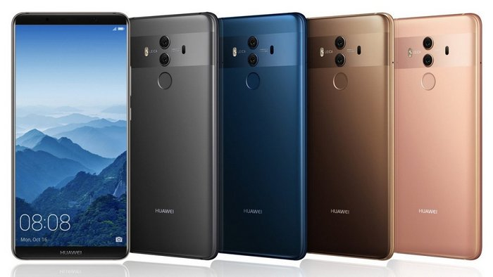
Суммарная выручка компании составила 521,6 миллиардов юаней (75,1 миллиардов долларов), что на 32% больше показателя 2015 года. Чистая прибыль достигла 37,1 миллиардов юаней (5,3 миллиардов долларов), увеличившись за год на 0,4%. В 2016 году Huawei продолжал инвестировать в будущее развитие, за счет чего суммарные инвестиции в исследования и разработки составили 76,4 миллиардов юаней (11 миллиардов долларов). В 2016 году подразделение Huawei Carrier BG получило выручку в 290,6 миллиардов юаней (41,8 миллиардов долларов), что на 24% больше, чем годом ранее. Отличные показатели были достигнуты за счет развития цифровой трансформации и использования возможностей, открывшихся в сегментах облачных сервисов, видео, Интернета вещей, а также за счет оптимизации операционной деятельности. Работая в тесном взаимодействии с партнерами, Huawei Enterprise BG создает информационно-коммуникационные технологии для цифровой трансформации ключевых вертикально ориентированных отраслей, таких как финансы, энергетика, государственное управление и общественная безопасность. В 2016 году выручка этого подразделения составила 40,7 миллиардов юаней (5,9 миллиардов долларов), что на 47% больше, чем годом ранее. Благодаря инновационности своих продуктов и растущей глобальной узнаваемости бренда как производителя премиальных гаджетов Huawei Consumer BG отгрузила в прошедшем году 139 миллионов смартфонов, получив 179.8 миллиардов юаней (25,9 миллиардов долларов) выручки и превысив на 44% показатель прошлого года.